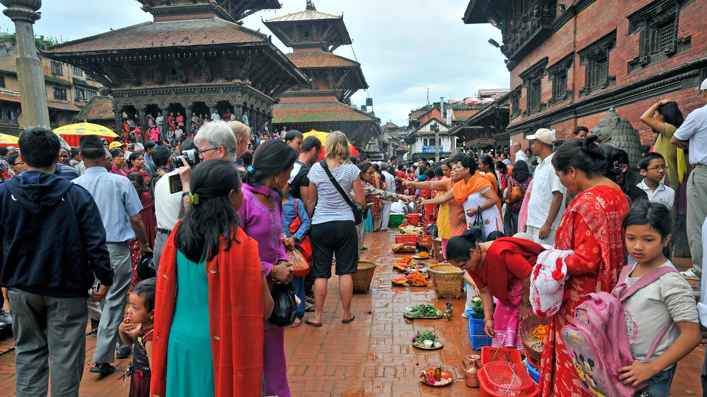
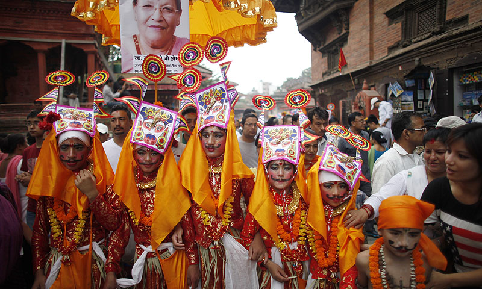
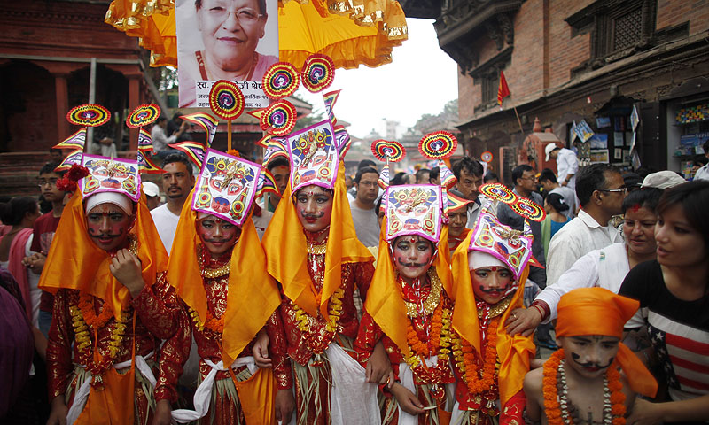

on the streets of Kathmandu Valley.
GAI JATRA
Join the carnival of dancing, singing, mirth & laughter,on the streets of Kathmandu Valley.
Gai Jatra is a carnival of dancing, singing, mirth and laughter. The festival of cow is celebrated in the Kathmandu Valley to commemorate the death of loved ones. As part of the festival family members of the deceased of the past year send people dressed as cows to parade on the streets.The festival usually falls in July or August.
Gai Jatra is a time to remember lost ones and also to ease the pain. The word "Gai" mans cow in English. Cow is regarded as the goddess of wealth in Hindu religion. Sharing of sorrow and taking the comfort in knowing that their lost ones are safe is the true reason of celebrating this festival.

